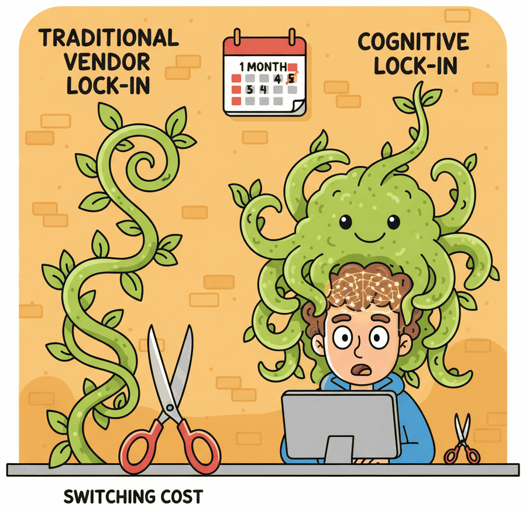

"The most dangerous lock-in is not in your contract. It is in your team's muscle memory."
Compass, Vendor Wary AI Agent
Lock-in in the LLM era is fundamentally different from traditional vendor lock-in. When your product depends on a cloud database, lock-in comes from proprietary query languages, data formats, and migration friction. When your product depends on an LLM, the technical switching cost is surprisingly low (most providers accept nearly identical REST payloads), but the cognitive switching cost is high. Your team learns one provider's quirks, optimizes prompts for one model's personality, and builds institutional knowledge around one set of failure modes. This section explores why cognitive lock-in matters more than contract lock-in, how to plan for AI continuity, and how to architect your system so that switching providers is a configuration change rather than a rewrite.
Prerequisites
This section assumes familiarity with LLM APIs (Chapter 11), including request/response formats and authentication patterns. Understanding of evaluation pipelines (Chapter 42) will help you appreciate the portability checklist at the end. The AI strategy discussion in Chapter 67 provides useful background on build-vs-buy decisions that intersect with provider selection.

70.3.1 Vendor Lock-in vs. Cognitive Lock-in
The traditional cloud computing playbook warns against vendor lock-in: proprietary APIs, non-standard data formats, egress fees, and contractual traps that make migration expensive. These concerns apply to LLM providers too, but they are not the primary risk. The primary risk is something subtler.
Switching LLM providers is technically easy but cognitively expensive. Your team has spent months learning one model's quirks: which prompts produce reliable structured output, where it hallucinates, how it handles edge cases in your domain. That institutional knowledge is not transferable. When you switch providers, you restart the learning curve. The most effective lock-in mitigation is not abstraction layers (though those help); it is a comprehensive evaluation suite that lets you test any new provider against your quality bar in hours, not weeks.
70.3.1.1 What Traditional Lock-in Looks Like
In conventional cloud infrastructure, lock-in manifests through concrete technical barriers. Your application uses a proprietary database query language that no other provider supports. Your data sits behind egress fees that make extraction prohibitively expensive. Your deployment scripts assume a specific orchestration system. Each of these barriers adds measurable switching cost, and the total cost grows linearly with the depth of integration.
70.3.1.2 Cognitive Lock-in: The Hidden Dependency
With LLM providers, the technical barriers are relatively thin. Most providers offer OpenAI-compatible endpoints, accept similar JSON payloads, and return responses in nearly identical formats. The real lock-in is cognitive: it lives in your team's habits, mental models, and accumulated intuitions about how a specific model behaves.
Consider what happens when a team spends six months building a product on GPT-4o. They learn that GPT-4o responds well to a particular system prompt structure. They discover that it handles ambiguous user inputs in a specific way. They develop intuitions about when to set temperature to 0.0 versus 0.7. They accumulate a library of prompt patterns that exploit GPT-4o's strengths and work around its weaknesses. None of this knowledge transfers cleanly to Claude, Gemini, or Llama.
| Dimension | Traditional Vendor Lock-in | Cognitive Lock-in (LLM) |
|---|---|---|
| Primary barrier | Proprietary APIs, data formats, egress fees | Team habits, prompt patterns, model-specific intuitions |
| Switching cost type | Engineering time to rewrite integrations | Relearning model behaviour; re-tuning prompts; re-running evaluations |
| Visibility | Measurable (lines of code, data volume, contract terms) | Invisible until you attempt a switch |
| Growth rate | Linear with integration depth | Roughly with team experience on one provider (the curve is faster than linear in case studies, but the actual functional form has not been measured) |
| Mitigation | Standard APIs, open formats, multi-cloud architecture | Provider-agnostic evaluation suites, prompt externalization, regular cross-provider testing |

Cognitive lock-in grows exponentially, not linearly. Every week your team spends on a single provider deepens their model-specific intuitions. After three months, switching feels easy on paper (the API call is nearly identical) but terrifying in practice (every prompt needs re-testing, every edge case needs re-discovery, every quality threshold needs re-calibration). The antidote is not to avoid commitment; it is to invest in provider-agnostic evaluation infrastructure so you can measure what a switch would actually cost. We cover this in the portability checklist in Section 6.
70.3.2 AI Continuity Planning
Business continuity planning is standard practice for databases, payment processors, and cloud infrastructure. Surprisingly few teams apply the same discipline to their LLM dependencies, even though the risks are at least as severe. Your LLM provider can change pricing overnight, deprecate the model version you depend on, suffer an extended outage, or alter model behaviour through a silent update.
70.3.2.1 The Five Continuity Risks
Every AI product that depends on an external model provider faces five categories of continuity risk. Understanding these risks is the first step toward mitigating them.
- Pricing shocks. Your provider doubles the per-token cost. This has happened multiple times in the industry. If your unit economics depend on a specific price point, a sudden increase can make your product unprofitable overnight. The AI unit economics framework from Section 70.1 should include sensitivity analysis for a 2x and 5x cost increase.
- Model deprecation. The specific model version you have optimized your prompts for reaches end-of-life. The replacement model may behave differently, breaking prompts that passed your eval suite. OpenAI deprecated the original GPT-4 in favour of GPT-4 Turbo, then GPT-4o, each time changing behaviour in subtle ways.
- Extended outage. Your provider experiences a multi-hour or multi-day outage. If your product has no fallback, your users experience a complete service failure. This is not hypothetical; every major LLM provider has experienced significant outages.
- Behavioural drift. The provider updates model weights, safety filters, or post-processing logic without formal version change. Your prompts produce different outputs. Your eval scores drop. Section 70.4 covers drift detection; here we focus on the continuity planning response.
- Terms of service changes. The provider changes its acceptable use policy, data retention practices, or training data policies in ways that conflict with your compliance requirements or your customers' expectations.
70.3.2.2 The AI Continuity Plan Template
A minimal AI continuity plan answers four questions for each risk category: What is the trigger? What is the immediate response? What is the fallback? What is the recovery timeline?
| Risk | Trigger | Immediate Response | Fallback | Recovery Target |
|---|---|---|---|---|
| Pricing shock | Cost per request exceeds 2x baseline | Activate cost circuit breaker; enable aggressive caching | Route to secondary provider or smaller model | 48 hours to re-evaluate unit economics |
| Model deprecation | Deprecation notice from provider | Pin current version; begin eval suite runs on replacement | Migrate prompts to next-best model (pre-tested quarterly) | 2 weeks for prompt re-optimization |
| Extended outage | Provider API returns errors for >5 minutes | Automatic failover to secondary provider | Degrade gracefully (cached responses, rule-based fallback) | Seconds (automated) to minutes (manual review) |
| Behavioural drift | Eval scores drop >5% on stable test set | Alert on-call engineer; freeze deployments | Roll back to pinned model version or switch provider | Hours to days depending on severity |
| ToS change | Provider policy update email | Legal review within 48 hours | Migrate to compliant provider (pre-validated quarterly) | 2 to 4 weeks for full migration |
Who: A platform engineering lead at a Series B fintech company running all LLM traffic through a single provider.
Situation: The team had built a provider abstraction layer and a secondary provider integration six months earlier, but nobody had tested the failover path since the initial setup.
Problem: When the primary provider experienced a 90-minute outage, the failover silently failed because the secondary provider's API had changed its authentication scheme. Customers saw errors for the full duration of the outage.
Decision: The lead instituted a quarterly "provider fire drill": on a designated day each quarter, the team routes 5% of production traffic to the secondary provider and compares quality scores against the primary.
Result: The first drill after the policy change caught two integration issues (a deprecated parameter and a response format change). Subsequent drills have run cleanly, and the team now has quarterly data points showing how prompts perform across providers. The cost is minimal (5% of one day's traffic), and the next provider outage triggered a seamless failover.
Lesson: Failover infrastructure that is never tested is failover infrastructure that does not work; schedule regular drills to keep secondary integrations alive.
70.3.3 Translation Cost Collapse: Why Traditional Lock-in Is Fading
Here is a counterintuitive development: LLMs themselves are dissolving the technical barriers that create traditional vendor lock-in. The very technology that creates cognitive lock-in is simultaneously destroying API-level lock-in.
70.3.3.1 LLMs as Universal Translators
Consider what it takes to switch between LLM providers at the API level. You need to translate your request format (usually minor JSON differences), adapt your prompt structure (system/user/assistant role mappings), and normalize the response format (extracting the generated text from slightly different JSON paths). In the pre-LLM era, this kind of format translation was tedious, error-prone, and expensive. Today, you can literally ask an LLM to do the translation for you.
More importantly, the industry is converging on a de facto standard. The OpenAI chat completions API format has become the lingua franca that nearly every provider supports, either natively or through compatibility layers. Anthropic, Google, Mistral, and most open-weight model serving frameworks (vLLM, Ollama, LiteLLM) all offer OpenAI-compatible endpoints. This convergence is not accidental; it is a natural consequence of network effects in developer ecosystems.
70.3.3.2 What Switching Actually Costs Today
Given this convergence, the technical switching cost between providers has collapsed to near zero for the API call itself. What remains are three non-trivial costs:
- Prompt re-optimization. Different models respond differently to the same prompt. A prompt that scores 94% on GPT-4o might score 82% on Claude Sonnet. The gap is not because one model is "worse"; it is because each model has different strengths, different instruction-following patterns, and different default behaviours. Re-optimizing prompts typically requires 1 to 3 days of focused effort per critical prompt.
- Evaluation re-baselining. Your eval thresholds were calibrated for one model's output distribution. A new model will produce outputs with different characteristics, even when the quality is equivalent. You need to re-run your full eval suite (Chapter 42) and potentially adjust scoring rubrics.
- Edge case rediscovery. Over months of production use, your team discovers specific input patterns that cause problems and adds guardrails to handle them. A new model may fail on entirely different inputs, requiring a new round of edge case discovery and mitigation.
In 2024, an engineer at a mid-sized startup reported that switching their entire product from GPT-4 to Claude 3.5 Sonnet took less than two hours for the API integration (literally changing one URL and one model name in their LiteLLM config) but three weeks for prompt re-optimization and evaluation re-baselining. The ratio of integration effort to optimization effort was approximately 1:80. This perfectly illustrates why cognitive lock-in dominates technical lock-in in the LLM era.
70.3.4 The Portable Monogamy Strategy
Given the realities above, the optimal strategy for most teams is what we call "portable monogamy": commit deeply to one provider for speed of execution, but architect your system so that switching providers is a configuration change rather than a rewrite. This approach gives you the best of both worlds: the depth of optimization that comes from mastering one model, and the optionality that comes from clean abstraction boundaries.
 and OSS providers, plus a versioned prompt registry, provider-agnostic eval harness, and unified observability layer
and OSS providers, plus a versioned prompt registry, provider-agnostic eval harness, and unified observability layer
70.3.4.1 Why Full Commitment Beats Premature Multi-Provider
Teams that try to support multiple providers from day one often end up with a lowest-common-denominator integration. They avoid using provider-specific features (function calling syntax, structured output modes, extended context windows) because those features differ across providers. The result is a product that uses no provider well, optimized for portability at the expense of capability.
Portable monogamy avoids this trap. You commit fully to your primary provider, exploit their unique capabilities, and optimize your prompts specifically for their model. But you do this through an abstraction layer that isolates provider-specific logic behind clean interfaces. When you need to switch (or when you want to add a second provider for specific tasks), you implement a new adapter rather than rewriting your application.
70.3.4.2 The Abstraction Layer Pattern
The core of the portable monogamy strategy is a provider abstraction layer. This is not a heavyweight framework; it is a thin interface that separates your application logic from provider-specific API details. The following implementation demonstrates the pattern.
"""Provider abstraction layer for LLM-powered applications.
Supports multiple providers behind a unified interface while allowing
provider-specific optimizations through adapter classes.
"""
from __future__ import annotations
import json
import os
import time
from abc import ABC, abstractmethod
from dataclasses import dataclass, field
from pathlib import Path
from typing import Any
@dataclass
class LLMRequest:
"""Provider-agnostic request format."""
system_prompt: str
user_message: str
model: str | None = None # Override default model
temperature: float = 0.7
max_tokens: int = 1024
response_format: dict | None = None # JSON schema if needed
tools: list[dict] | None = None # Function calling definitions
metadata: dict = field(default_factory=dict) # For logging, tracing
@dataclass
class LLMResponse:
"""Provider-agnostic response format."""
content: str
model: str
provider: str
usage: dict # {"prompt_tokens": N, "completion_tokens": N}
latency_ms: float
raw_response: Any # Original provider response for debugging
tool_calls: list[dict] | None = None
class LLMProvider(ABC):
"""Abstract base class for LLM provider adapters."""
@abstractmethod
def complete(self, request: LLMRequest) -> LLMResponse:
"""Send a completion request and return a normalized response."""
...
@abstractmethod
def health_check(self) -> bool:
"""Return True if the provider is reachable and responding."""
...
class OpenAIProvider(LLMProvider):
"""Adapter for OpenAI and OpenAI-compatible endpoints."""
def __init__(self, model: str = "gpt-4o", base_url: str | None = None):
import openai
self.model = model
self.client = openai.OpenAI(base_url=base_url) if base_url else openai.OpenAI()
def complete(self, request: LLMRequest) -> LLMResponse:
model = request.model or self.model
start = time.perf_counter()
kwargs: dict[str, Any] = {
"model": model,
"messages": [
{"role": "system", "content": request.system_prompt},
{"role": "user", "content": request.user_message},
],
"temperature": request.temperature,
"max_tokens": request.max_tokens,
}
if request.response_format:
kwargs["response_format"] = request.response_format
if request.tools:
kwargs["tools"] = request.tools
resp = self.client.chat.completions.create(**kwargs)
elapsed = (time.perf_counter() - start) * 1000
return LLMResponse(
content=resp.choices[0].message.content or "",
model=resp.model,
provider="openai",
usage={
"prompt_tokens": resp.usage.prompt_tokens,
"completion_tokens": resp.usage.completion_tokens,
},
latency_ms=elapsed,
raw_response=resp,
tool_calls=self._extract_tool_calls(resp),
)
def health_check(self) -> bool:
try:
self.client.models.list()
return True
except Exception:
return False
@staticmethod
def _extract_tool_calls(resp) -> list[dict] | None:
msg = resp.choices[0].message
if not msg.tool_calls:
return None
return [
{"name": tc.function.name, "arguments": json.loads(tc.function.arguments)}
for tc in msg.tool_calls
]
class AnthropicProvider(LLMProvider):
"""Adapter for the Anthropic Messages API."""
def __init__(self, model: str = "claude-sonnet-4-20250514"):
import anthropic
self.model = model
self.client = anthropic.Anthropic()
def complete(self, request: LLMRequest) -> LLMResponse:
model = request.model or self.model
start = time.perf_counter()
kwargs: dict[str, Any] = {
"model": model,
"system": request.system_prompt,
"messages": [{"role": "user", "content": request.user_message}],
"temperature": request.temperature,
"max_tokens": request.max_tokens,
}
if request.tools:
kwargs["tools"] = self._convert_tools(request.tools)
resp = self.client.messages.create(**kwargs)
elapsed = (time.perf_counter() - start) * 1000
content = ""
tool_calls = []
for block in resp.content:
if block.type == "text":
content += block.text
elif block.type == "tool_use":
tool_calls.append({"name": block.name, "arguments": block.input})
return LLMResponse(
content=content,
model=resp.model,
provider="anthropic",
usage={
"prompt_tokens": resp.usage.input_tokens,
"completion_tokens": resp.usage.output_tokens,
},
latency_ms=elapsed,
raw_response=resp,
tool_calls=tool_calls if tool_calls else None,
)
def health_check(self) -> bool:
try:
self.client.messages.create(
model=self.model, max_tokens=10,
messages=[{"role": "user", "content": "ping"}],
)
return True
except Exception:
return False
@staticmethod
def _convert_tools(openai_tools: list[dict]) -> list[dict]:
"""Convert OpenAI-format tool definitions to Anthropic format."""
return [
{
"name": t["function"]["name"],
"description": t["function"].get("description", ""),
"input_schema": t["function"]["parameters"],
}
for t in openai_tools
]LLMRequest and LLMResponse dataclasses define a provider-agnostic contract. Each adapter translates between this contract and the provider's native API. Adding a new provider (Google Gemini, Mistral, a local Ollama instance) requires only a new adapter class; no application code changes.70.3.4.3 Prompt Externalization
The second pillar of portable monogamy is prompt externalization: storing your prompts in files outside your application code rather than embedding them as string literals. This practice provides three benefits.
- Version control. Prompts evolve independently of application logic. Storing them in separate files gives you a clean git history of prompt changes, making it easy to correlate quality shifts with specific prompt edits.
- Provider-specific variants. You can maintain prompt variants optimized for different models in parallel (e.g.,
classify_intent.openai.txtandclassify_intent.anthropic.txt) and select the right one at runtime based on the active provider. - Non-engineer iteration. Product managers, domain experts, and prompt engineers can edit prompts without touching application code, lowering the barrier to iteration and reducing deployment risk.
"""Prompt loader with provider-specific variant support."""
from pathlib import Path
class PromptStore:
"""Load prompts from external files with optional provider-specific variants.
Directory structure:
prompts/
classify_intent.txt # Default (provider-agnostic)
classify_intent.openai.txt # OpenAI-optimized variant
classify_intent.anthropic.txt # Anthropic-optimized variant
summarize_ticket.txt
"""
def __init__(self, prompts_dir: str = "prompts"):
self.base_dir = Path(prompts_dir)
def load(self, prompt_name: str, provider: str | None = None) -> str:
"""Load a prompt by name, preferring provider-specific variant if available."""
if provider:
variant_path = self.base_dir / f"{prompt_name}.{provider}.txt"
if variant_path.exists():
return variant_path.read_text(encoding="utf-8").strip()
default_path = self.base_dir / f"{prompt_name}.txt"
if default_path.exists():
return default_path.read_text(encoding="utf-8").strip()
raise FileNotFoundError(
f"No prompt found for '{prompt_name}' "
f"(checked provider='{provider}' and default)"
)
# Usage
store = PromptStore("prompts")
system_prompt = store.load("classify_intent", provider="anthropic")
# Returns contents of prompts/classify_intent.anthropic.txt if it exists,
# otherwise falls back to prompts/classify_intent.txtclassify_intent.anthropic.txt. If that file does not exist, it falls back to the default classify_intent.txt. This pattern lets you maintain provider-optimized prompts without polluting your application logic with conditional branches.You have seen why portability matters and what the portable monogamy strategy looks like at a high level. Next we make the implementation concrete with multi-provider routing, a portability checklist, an architecture diagram, and the anti-patterns to avoid. Continue with Section 70.3b: Multi-Provider Routing and the Portability Checklist.